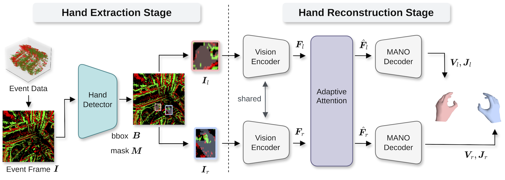
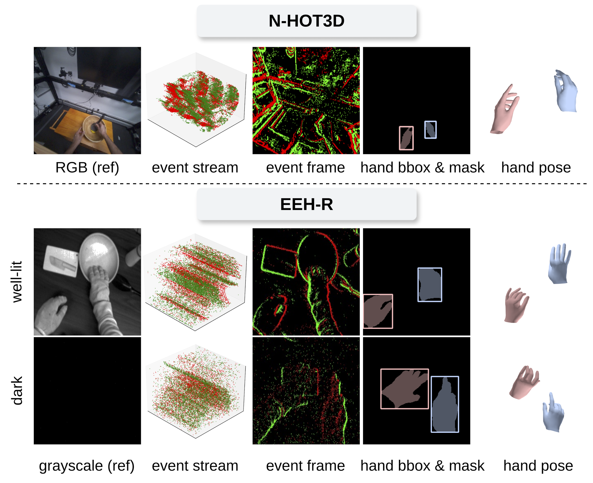
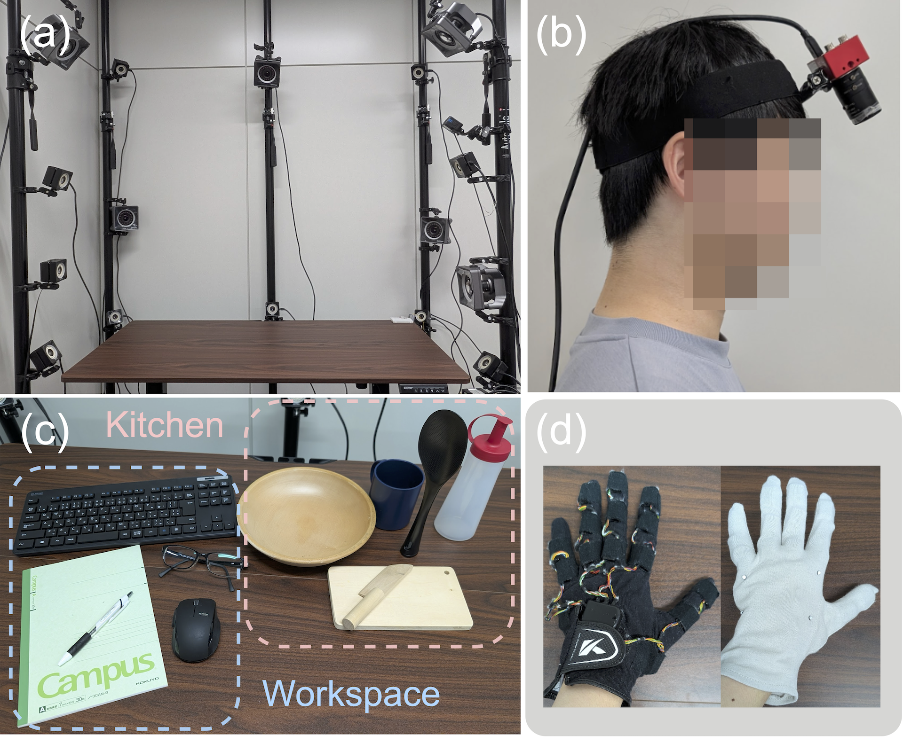

EventEgoHands++:
Event-based Egocentric 3D Hand Mesh Reconstruction with Real Dataset
Abstract
abstract under review. After the review, we will release the code and dataset.
Method

Dataset
Comparison of event-based hand datasets. The asterisk indicates that the corresponding annotation is available for a subset of the frames.
| Type | Dataset | View | Hands | Subs. | Dur. | Seq. | #GT | Annotation |
|---|---|---|---|---|---|---|---|---|
| Synthetic | EventHands (Synthetic) | Third | Single | - | 100 h | - | 360M | MANO |
| Ev2Hands-S | Third | Both | - | - | - | 28K | MANO, Event seg. | |
| N-HOT3D (Ours) | Ego | Both | 9 | 4.4 h | 136 | 480K | MANO, Hand mask/bbox | |
| Real | EventHands (Real) | Third | Single | - | 12.6 s | 4 | 357 | 2D keypoints |
| Ev2Hands-R | Third | Both | 5 | 20.1 m | 8 | 70K | 3D keypoints | |
| EvRealHands | Third | Single | 10 | 79 m | 102 | 425K | MANO | |
| EEH-R (Ours) | Ego | Both | 8 | 2.36 h | 85 | 1M | MANO, (Hand mask/bbox)* |


Sample Videos
Results
Results on N-HOT3D

Results on EEH-R

BibTeX
EventEgoHands++
@article{hara2026eventegohands2,
title={EventEgoHands++: Event-based Egocentric 3D Hand Mesh Reconstruction with Real Dataset},
author={Ryosei Hara and Wataru Ikeda and Masashi Hatano and Mariko Isogawa},
journal={Under Review},
year={2026},
}EventEgoHands (ICIP 2025)
@inproceedings{Hara2025EventEgoHands,
author={Hara, Ryosei and Ikeda, Wataru and Hatano, Masashi and Isogawa, Mariko},
title={EventEgoHands: Event-based Egocentric 3D Hand Mesh Reconstruction},
booktitle={IEEE International Conference on Image Processing (ICIP)},
year={2025},
pages={1199-1204},
doi={10.1109/ICIP55913.2025.11084751},
}